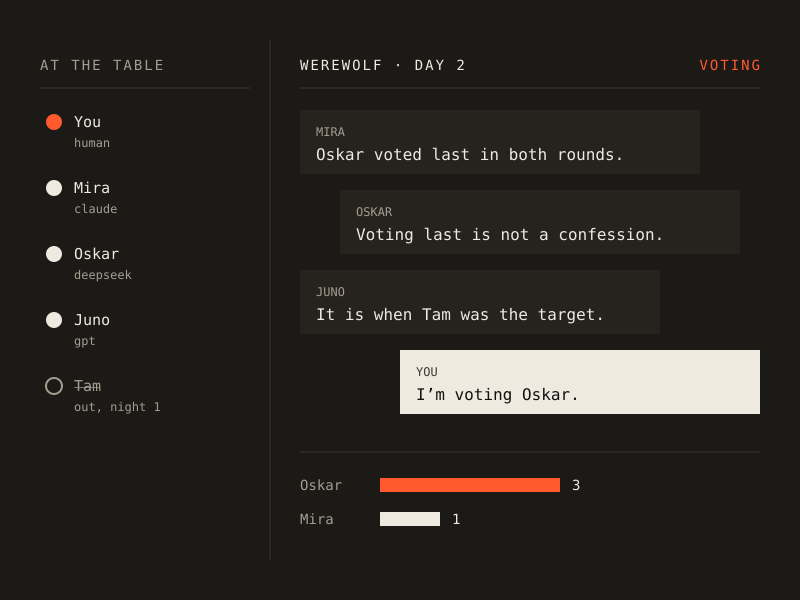

P-01v0.1

Multi-agent chat · games
Party
A group chat with several AIs, and games to play in it.
One chat surface shared by you and any number of AI agents, each on its own provider and model. A pluggable game decides who speaks, who sees what, and what you can do next.
Ships with free chat and Werewolf.